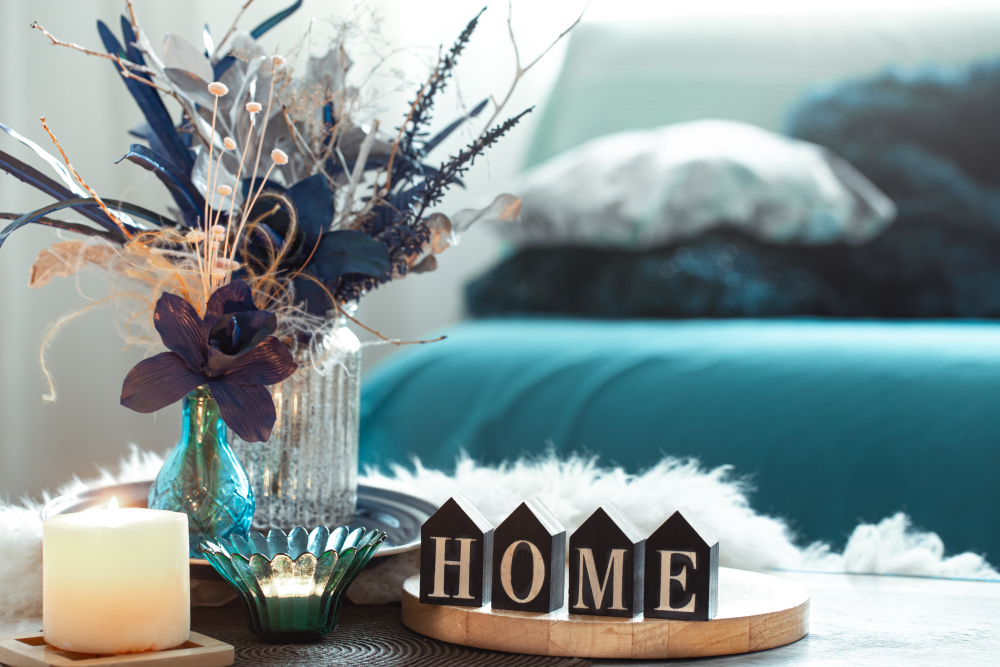
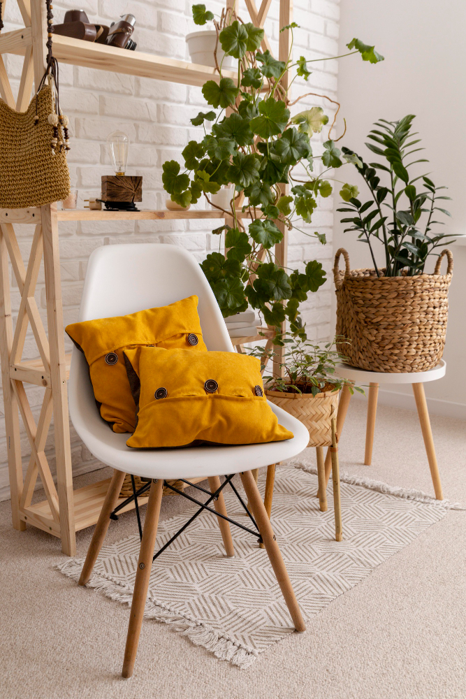
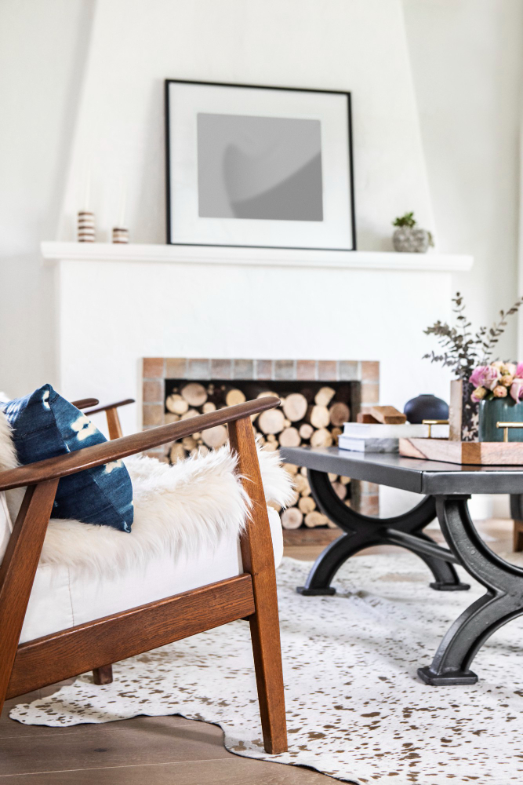
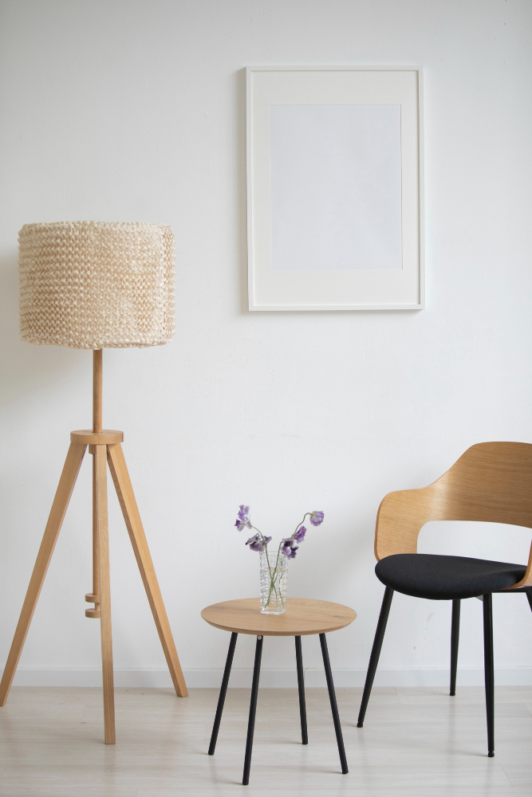
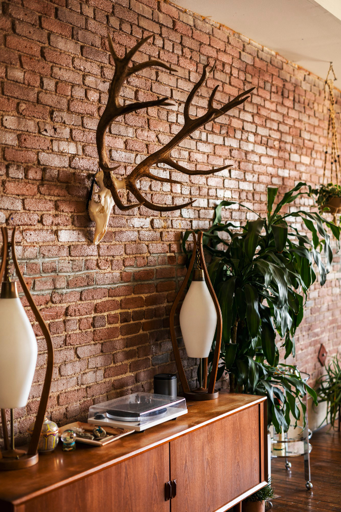
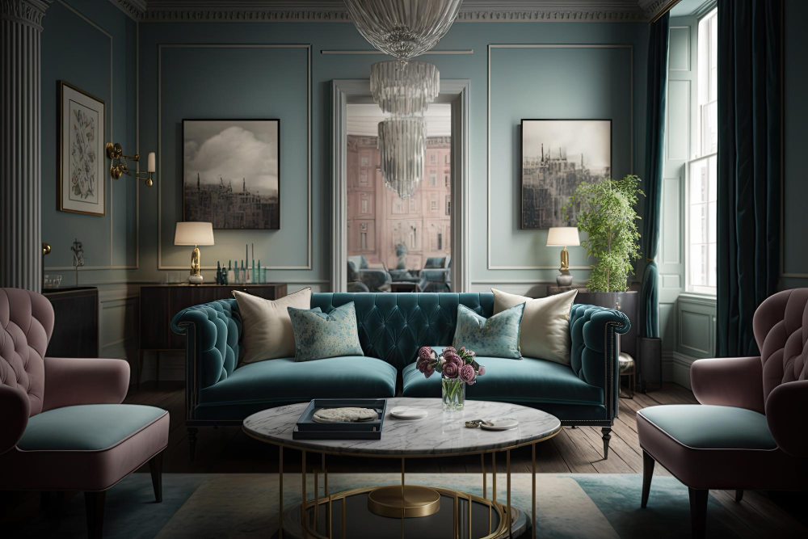
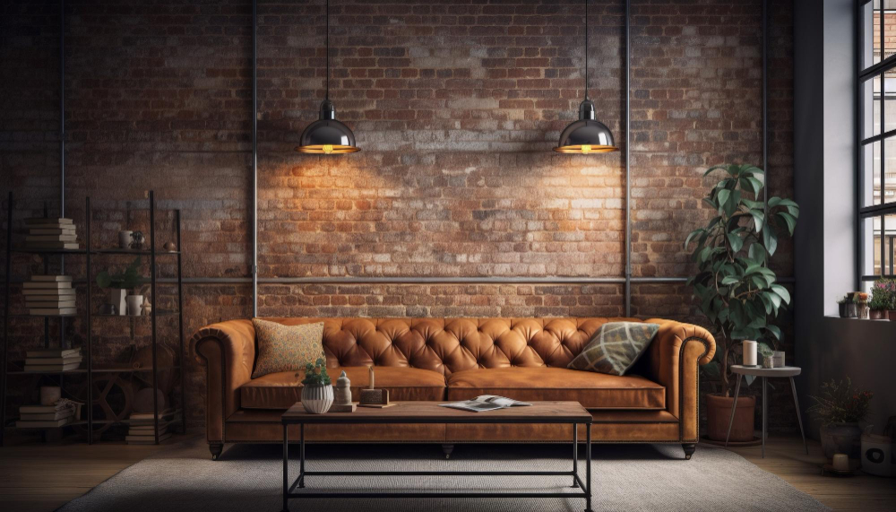
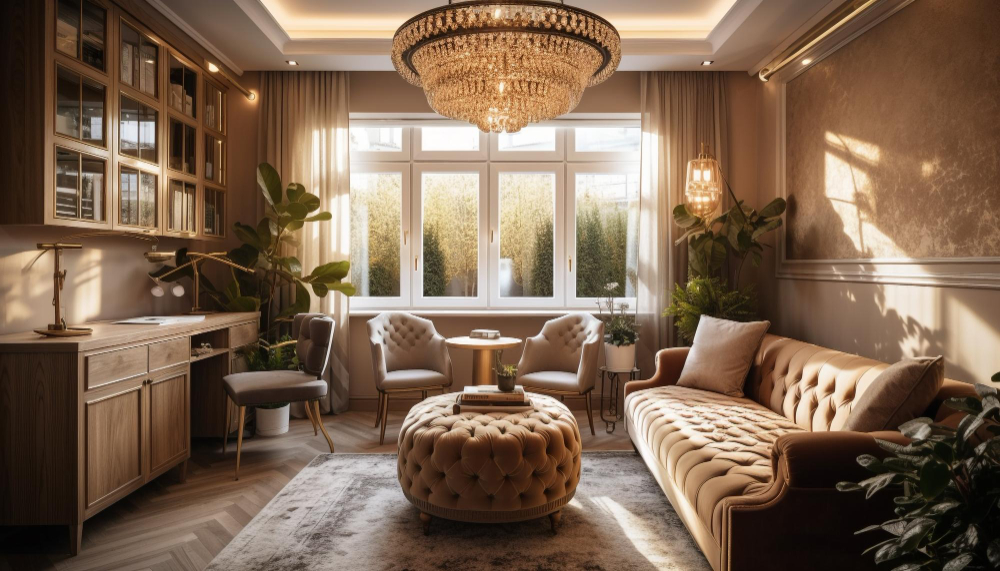
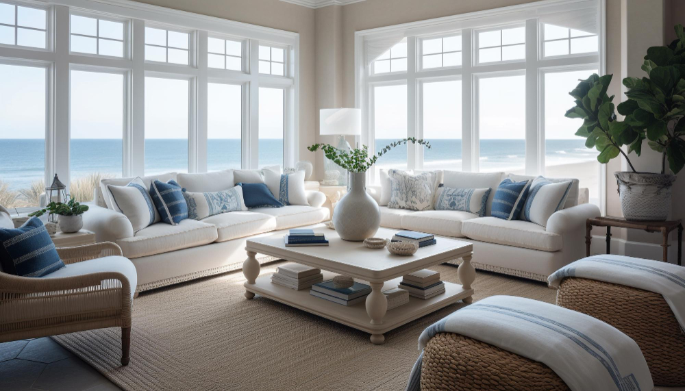

Descripcion
Nos dedicamos a la venta de mobiliario y asesoramiento para el interior de tu hogar. Asesoramos en los diferentes estilos de decoracion que se adaptan mejor a tus gustos y preferencias en tu hogar.
Estilos de Decoracion
Estos son los estilos de decoracion mas consultados, los cuales detallaremos a continuacion
| Estilo | Descripcion | Caracteristicas | Imagen Ilustrativa |
|---|---|---|---|
| Nordico | Es una tendencia que en los últimos años ha cobrado mucha fuerza. El origen de este tipo de decoración se encuentra en Noruega, Suecia, Finlandia y Dinamarca, donde los días soleados escasean gran parte del año, por lo que se buscó la manera de sustituir esa falta de luz. La solución la encontraron en colores claros y elementos relacionados con la naturaleza. | La naturaleza del bosque y montañas son la principal inspiración para este estilo, por ello observamos que en la mayoría de los casos hay muebles o elementos de madera en medio de muros grises claros, a semejanza del cielo de aquellos países de nublados pálidos. |  |
| Escandinavo | Es otro de los estilos favoritos en tiempos recientes. Su origen, en el norte de Europa, es muy similar al nórdico: busca llevar luz al interior de los hogares en medio de ambientes con poco sol, de ahí la preferencia por los tonos claros en las paredes. | La característica distintiva de este estilo son sus espacios despejados, similar al minimalismo. El objetivo del estilo escandinavo es transmitir paz, sencillez y tranquilidad, por lo que el color blanco es el predominante. El techo, suelo, paredes y mobiliario suelen ir en el mismo color o tonos muy semejantes. |  |
| Minimalista | Si el orden es algo que rige tu vida, el minimalismo es para ti. Bajo la premisa “menos es más”, los espacios que se crean en este estilo son simples y serenos. | Las maderas brillantes o muebles en negro que dan sensación de opulencia son la clave en este tipo de decoración. Predominan las superficies lisas, el vidrio o semejantes al ébano. Aunque es usual que muebles y escasos adornos vayan de colores semejantes a la pintura de las paredes, también se pueden emplear elementos de contraste con elementos en negro. |  |
| Rústico o farm house | La intención de este estilo es traer la naturaleza al interior para crear casas rurales que transmitan armonía, bienestar y confort. Si la casa tiene elementos antiguos, es importante mantener ese carácter. | Aunque los pisos y muebles de madera y empedrados son los favoritos, hay una gran variedad de materiales naturales que van muy bien en este estilo. Los imprescindibles son madera, piedra, barro, mimbre y cerámica. |  |
| Clásico moderno o ecléctico | Aunque sigue vigente el estilo clásico de decoración cargada, en los últimos años se ha optado por darle un toque moderno, para crear espacios elegantes y más actuales. El clásico moderno también se conoce como un estilo eclético ya que combina elementos de dos tipos de decoración. | Se mantienen las formas clásicas, como las molduras en las muebles y paredes, pero se combina con una decoración de elementos lisos, como los que aporta la piedra y el mármol. Si se emplean detalles en cristal, mejorarán aún más los estilos de las habitaciones. |  |
| Industrial | También conocido como urbano, se inspira en un almacén o en un loft de las grandes ciudades. La historia de esta decoración cuenta que, en la década del 50, jóvenes en busca de crecimiento en grandes ciudades como Nueva York o Chicago, tenían que empezar en lugares que años atrás habían sido fábricas, por lo que abundaban vigas, ladrillos y hormigón. | Los muebles que se utilizan en los estilos de decoración de casas industriales son de metal o hierro, incluso se dejan ver con un poco de óxido en ellos. También se usan maderas sin tratar y chapas. No pueden faltar uno o dos piezas decorativas como cuadros o fotografías para agregar un toque de color a un ambiente con colores opacos o pálidos. |  |
| Art Deco | Una de las corrientes de interiorismo más importantes del siglo XX, es el Art Deco, un símbolo del glamour y la sofisticación, inspirados en los años veinte. | Dentro de sus características fundamentales está la tendencia hacia las líneas geométricas, en particular las rectilíneas y las paletas monocromáticas, es decir, elegir un color y utilizar las tonalidades de este. La clave está en el contraste entre colores claros y oscuros o brillantes, como el rojo, azul o amarillo. |  |
| Nautico | Fue el turismo lo que dio paso a estilo náutico, donde los colores frescos y todo lo relacionado con el mar tiene un papel principal. Las casas en playas del Caribe y América Latina son la principal fuente de inspiración, pues bajo un sol eternamente veraniego, se buscó que los interiores transmitieran frescura. | Como colores indispensables están el azul marino, azul rey y el blanco. Detalles en rojo o dorado, nunca fallan para este tipo de decoración. |  |
| Oriental | Influenciados por el Feng Shui, el equilibrio es la clave en este tipo de decoración que se ha extendido por todo el mundo, con la idea de concebir los espacios como una extensión de nuestra mente, por lo que se busca crear atmósferas de paz y en equilibrio. | Tradicionalmente los materiales de los materiales ¿? predominantes son bambú, piedra, papel de arroz, madera de cedro y la seda. Los colores de estos elementos se contrastan con los muros, que en la mayoría de los casos son blancos o de tonos claros, como el beige. |